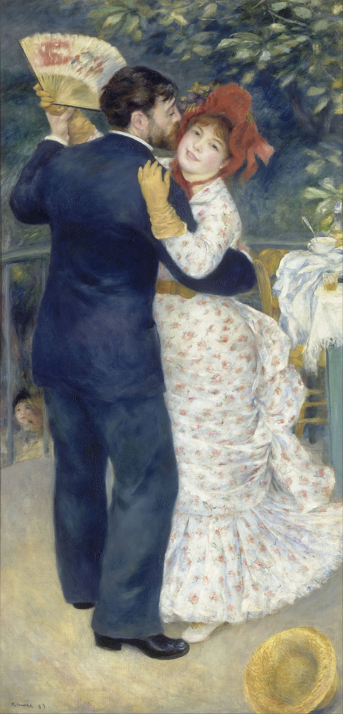

<head>
<meta charset="UTF-8" />
<meta name="keywords" content="drawing, painting" />
<meta name="description" content="drawings by Sunjy" />
<title>Sunjy</title>
<link rel="shortcut icon" type="image/x-icon" href="../../mImages/mCommon/favicon.ico" media="screen" />
<link rel="stylesheet" type="text/css" href="../../mCsses/mCommon/mCssA.css" />
<link rel="stylesheet" type="text/css" href="../../mCsses/mCommon/mCssB.css" />
<link rel="stylesheet" type="text/css" href="../../mCsses/mCommon/mCssC.css" />
<link rel="stylesheet" type="text/css" href="../../mCsses/mCommon/mCssD.css" />
<link rel="stylesheet" type="text/css" href="../../mCsses/mContent/mCssA.css" />
<link rel="stylesheet" type="text/css" href="../../mCsses/mContent/mCssB.css" />
<link rel="stylesheet" type="text/css" href="../../mCsses/mContent/mCssC.css" />
<link rel="stylesheet" type="text/css" href="../../mCsses/mContent/mCssD.css" />
</head>
<script type="text/javascript" src="../../mScripts/mContent/mContentAA.js" /></script>
<script type="text/javascript" src="../../mScripts/mContent/mContentAB.js" /></script>
<script type="text/javascript" src="../../mScripts/mContent/mContentAC.js" /></script>
<script type="text/javascript" src="../../mScripts/mContent/mContentAD.js" /></script>
<script type="text/javascript"></script> 
<script type="text/javascript">
document.write('<div class="mImgAbsolute"></div>');
/*
document.write('<p class="mFontSizeBColor" />From a white paper...</p>');
document.write('<table class="center"><tr><td>');
document.write('');
document.write('</td></tr></table>');
*/
</script>


<script type="text/javascript">
document.write('<p class="mFontSizeBColor" />Country Dance</p>');
document.write('<p class="mFontSizeSColor" />“Country Dance” by Pierre-Auguste Renoir shows a dancing couple under a chestnut tree. Both figures are painted life-size and occupy almost the entire painting.<br><br>The woman who holds a fan in her right hand is shown with a smiling face looking towards the viewer. The scene is bathed in a bright and cheerful light.<br><br>The background includes a table on the right. A hat on the ground and a pair of faces below the level of the dance floor.<br><br>The man depicted in this painting was a friend of Renoir’s, and the woman is Aline Charigot, who later became the wife of the Renoir.<br><br>This painting was commissioned in 1882 by a merchant who wanted artworks on the theme of the dancing. A complementary picture on the same subject, named Dance in the City, was also painted by Renoir.<br></p>');
document.write('<table class="center" /><tr><td>');
document.write('<br>The woman who holds a fan in her right hand is shown with a smiling face looking towards the viewer. The scene is bathed in a bright and cheerful light.<br><br>The background includes a table on the right. A hat on the ground and a pair of faces below the level of the dance floor.<br><br>The man depicted in this painting was a friend of Renoir’s, and the woman is Aline Charigot, who later became the wife of the Renoir.<br><br>This painting was commissioned in 1882 by a merchant who wanted artworks on the theme of the dancing. A complementary picture on the same subject, named Dance in the City, was also painted by Renoir.<br>" />');
document.write('</td></tr></table>');
</script>


